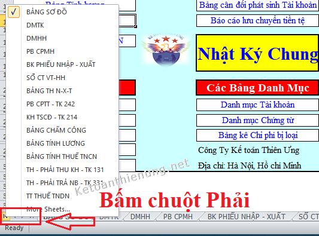

Các phím tắt trong Excel kế toán hữu ích như: Phím tắt di chuyển trong Excel, Phím tắt chuyển sheet trong excel, phím tắt tìm kiếm, phím tắt khôi phục, quay lại ...
Excel là 1 công cụ hữu ích cho công việc của người kế toán. Hiểu được điều đó Kế toán Diệu Tâm xin tổng hợp các phím tắt trong Excel kế toán, hy vọng sẽ giúp ích cho công việc kế toán trên Excel của các bạn được thuận lợi:
-------------------------------------------------------------
Ctrl + A : Bôi đen toàn bộ văn bản (Chọn toàn bộ bảng tính trong)
Ctrl + B : Chữ đậm
Ctrl + I : Chữ nghiêng
Ctrl + U : Chữ gạch chân
Ctrl + C : Copy dữ liệu
Ctrl + X : Cắt dữ liệu
Ctrl + V : Dán dữ liệu copy hoặc cắt
Ctrl + F : Bật hộp thoại tìm kiếm
Ctrl + H : Tìm kiếm và thay thế cụm từ
Ctrl + O : Mở file đã lưu
Ctrl + N : Mở một file mới
Ctrl + P: Bật hộp thoại in ấn
Ctrl + R : Tự động sao chép ô bên trái sang bên phải
Ctrl + S : Lưu tài liệu
Ctrl + W : Đóng tài liệu (giống lệnh Alt + F4)
Ctrl + Z : Hủy thao tác vừa thực hiện
Ctrl + Y: Khôi phục lệnh vừa bỏ (ngược lại với Ctrl+Z)
Ctrl + 1 : Hiển thị hộp thoại Format Cells (*)
Ctrl + 0 : Ẩn cột (giống lệnh hide)
Ctrl + shift + 0: Hiện các cột vừa ẩn (giống lệnh unhide)
Ctrl + 9 : Ẩn hàng (giống lệnh hide)
Ctrl + shift + 9: Hiện các hàng vừa ẩn (giống lệnh unhide
Ctrl + 8 : Chọn vùng dữ liệu liên quan đến ô (cell) hiện tại
Ctrl + (-) : Xóa các ô, khối ô hàng (bôi đen)
Ctrl + Shift + (+): Chèn thêm ô trống
Ctrl + Shift + F: Hiện danh sách phông chữ
Ctrl + Shift + P: Hiện danh sách cỡ chữ
Ctrl + F4: Đóng bảng tính
Alt + F4: Thoát Excel
Alt + tab : Di chuyển giữa hai hay nhiều file kế tiếp
Alt + các chữ cái có gạch chân: Vào các thực đơn tương ứng
Alt + Z: Chuyển chế độ gõ từ tiếng anh (A) sang tiếng việt (V)
Alt + <- : Hủy thao tác vừa thực hiện (nó giống lệnh Undo)
Shift + F2 : Tạo chú thích cho ô
Shift + F10 : Hiển thị thực đơn hiện hành (giống như ta kích phải chuộ)
Shift + F11 : Tạo sheet mới.
Các phím tắt định dạng số:
Ctrl + phím Shift + # Áp dụng định dạng ngày theo kiểu: ngày, tháng và năm.
Ctrl + phím Shift + @ Áp dụng định dạng thời gian với giờ, phút, và chỉ ra AM hoặc PM
Ctrl + phím Shift + % Áp dụng các định dạng phần trăm không có chữ số thập phân.
Ctrl + phím Shift + ^ Áp dụng định dạng số khoa học với hai chữ số thập phân.
Ctrl + phím Shift + ! Áp dụng định dạng số với hai chữ số thập phân và dấu trừ (-) cho giá trị âm.
Ctrl + Shift + $ Áp dụng định dạng tiền tệ với hai chữ số thập phân.
Ctrl + Shift + ~ Áp dụng định dạng số kiểu General.
Xem thêm: Cách làm sổ sách kế toán trên Excel
-------------------------------------------------------------
2. Các phím tắt Di chuyển trong Excel:
Ctrl + Mũi tên: Di chuyển đến vùng dữ liệu kế tiếp
Ctrl + Home: Về ô đầu Worksheet (A1)
Ctrl + End: Về ô có dữ liệu cuối cùng
Ctrl + Shift + Home: Chọn từ ô hiện tại đến ô A1
Ctrl + Shift + End: Chọn từ ô hiện tại đến ô có dữ liệu cuối cùng.
PgUp: Di chuyển lên trên một màn hình tính
PgDn: Di chuyển xuống dưới một màn hình tính
Alt + PgUp: Di chuyển sang trái một màn hình tính
Alt + PgDn: Di chuyển sang phải một màn hình tính.
---------------------------------------------------------------
3. Các phím tắt thao tác với Ô, Dòng, Cột trong Excel:F2: Đưa con trỏ vào trong ô
F4: Lặp lại thao tác trước
F12: Lưu văn bản với tên khác (nó giống với lệnh Save as đó)
Ctrl + Spacebar: Chèn cột
Shift + Spacebar: Chèn dòng
Shift + F11: Chèn một trang bảng tính mới
Ctrl + 0: Ẩn các cột hiện tại.
Ctrl + Shift + 0: Hiện các cột bị ẩn trong vùng đang chọn
Alt + h,a,r: Căn ô sang phải
Alt + h,a,c: Căn giữa ô
Alt + h,a,l: Căn ô sang trái
Alt + I + C (“I”: insert – chèn, “C”: column – cột): Chèn cột mới.
Alt + I + R (“I”: insert – chèn, “R”: row – hàng): Chèn hàng mới.
Ctrl + Shift + dấu cộng (+): -> Một hộp thoại Insert (chèn) sẽ xuất hiện để bạn lựa chọn giữa di chuyển ô hay chèn thêm hàng hoặc cột: Chèn nhiều hàng hoặc nhiều cột.
--------------------------------------------------------------------
Ctrl + Tab, Ctrl + F6: Chuyển đổi qua lại giữa các bảng tính đang mở
Ctrl + Shift + 0: Hiện các cột bị ẩn trong vùng đang chọn
Ctrl + F2: Xem trước khi in
Phím tắt chuyển sheet trong Excel:
Ctrl + PgUp (hoặc Page Up) tùy vào ký hiệu trên bàn phím máy tính của bạn nhé
- Chuyển sang sheet liền ngay bên trái (liền trước) sheet đang mở.
Ctrl + PgDn (hoặc Page Down)
- Chuyển sang sheet liền ngay bên phải (liền sau) sheet đang mở.
- Hoặc bạn bấm chuột phải vào các mũi tên góc dưới bên trái của thanh Sheet: -> Sẽ xuất hiện cửa sổ liệt kê danh sách các sheet có trong file Excel đó - > Bạn muốn tới sheet nào, thì chọn sheet đó là xong.

------------------------------------------------------------------------------------------
Xem thêm: Cách đổi số thành chữ trong Excel
Chúc các bạn thành công!
__________________________________________________